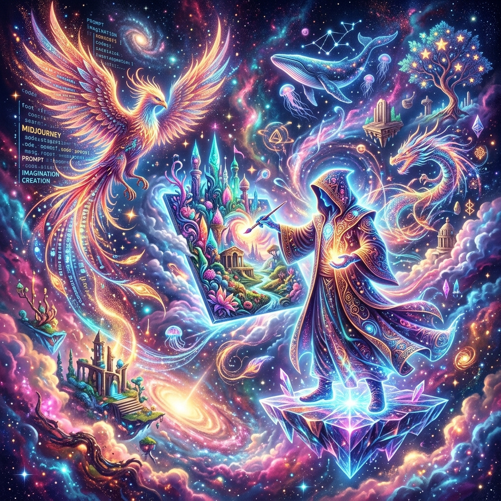

絵の才能がなくても、おしゃれでアーティスティックな画像が作れる「Midjourney」。今回はのその基本的な使い方と、綺麗な画像を生成するための「呪文（プロンプト）」のコツを伝授します。
1. Discordを準備しよう
Midjourneyは単体のアカウントではなく、「Discord」というチャットアプリの中で動かします。Discordのアカウントを持っていない方は、まずアプリをインストールして会員登録を済ませましょう。
2. 最初の「呪文」を唱える
Midjourneyのサーバーに入ったら、チャット欄に `/imagine` と入力し、その後に英語で作りたいもののキーワードを入れます（例： `A futuristic city with flying cars`）。数秒待てば、4枚の候補画像が生成されます。
3. 高品質にする魔法の言葉
よりリアルで美しい画像を生成したいときは、最後に `--v 6` や `high quality, highly detailed` などの言葉を添えるのがコツです。